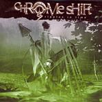

| Artist: | Chrome Shift |
| Title: | Ripples In Time |
| Label: | DVS DVS008 |
| Length(s): | 53 minutes |
| Year(s) of release: | 2003 |
| Month of review: | [06/2003] |
| 1) | Nightmachine | 5.24 |
| 2) | Full Moon | 4.45 |
| 3) | In My Own Dream | 4.13 |
| 4) | Shadowsong | 1.07 |
| 5) | Through | 5.54 |
| 6) | Kosmonauten Er Dod | 3.56 |
| 7) | Le Temp Des Assassins | 3.47 |
| 8) | Sorry | 4.39 |
| 9) | Ripples In Time I | 5.16 |
| 10) | Ripples In Time II | 5.31 |
| 11) | Ripples In Time III | 4.41 |
| 12) | Ripples In Time IV | 4.27 |
Full moon is dark grinding opener with plenty signature changing. The band has the ability to combine both the metal and prog aspects in a good way. There is a lot of bombast, but not the empty one you often see with many metal bands.
In My Own Dream is in a way a quieter track, still quite full by the way. The guitars still ring out, but the vocal melody and the synths are more melodic and more relaxed. After the short pianic Shadowsong, we arrive at Through, which opens in friendly fashion as well, with acoustic guitars featuring strongly. The guitar solo is a melodic one. The metal influence is not so strong here, although the pace goes up toward the end with double bass entering the picture.
Kosmonauten Er Dod has a weird title, and then it is not very surprising we get a progmetal instrumental right here. A fast pounding track with all the usual ingredients, and less focus on melody than in the other tracks. Not as inspired as the previous vocal tracks. Le Temp Des Assassins is an aggressive track, with plenty of keyboard bombast and somewhat manic singing.
Sorry features a repetitive softly singing of the title that manages to work. At first, the singer alone, later doubled, the song gains in power slowly, with the drummer inserting some atmospheric drums and the guitar adding its long ethereal lines. Then the song takes a turn with some emotional guitar soloing and the keyboards setting in for a solo as well. One of the better songs.
Ripples In Time is the epic on the album separated into four parts taking up almost twenty minutes. After a soft spoken beginning the first gets loose with an up-tempo rhythm guitar dominated and catchy vocal passage. For my tastes, this is a bit too metallic and too little sophistication in the song writing department. The powerful keyboards at the end are nice though. With cello like sounds we move into the bass riddled opening of the second part. The second part is a much better one, especially the chorus vocal melody is good, the song has overall a plodding feel. Heavy, until the sharp bombastic guitar solo. Very good. We take a turn of a kind when we move into the third part. If the band reminds of any other band I know, I think it has to be Threshold, heavy yet catchy. Long drawn atmosphere building guitar chords, low and grinding, are sent through the somewhat Ayreon like feel that this part has. Of course, the likeness is more to the metal side of Ayreon, then the softer side. The vocalist is not always on the mark, but it does all seem to fit. Time for more tempo here as the vocals alternate with a fast riff on the guitar. The vocalists pace also goes up, seeming almost at the end of his line, and giving the song the right kind of manicness. The fourth and closing part is a much moodier track, but with an air of reconciliation. Plenty of sound and bombast and overall an optimistic ending, with plentyt of piano and keyboards up front giving us the melody and the guitar and drums filling up the back.